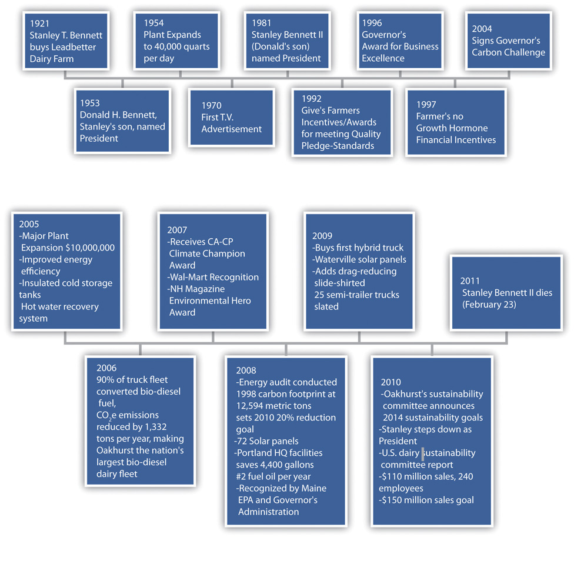
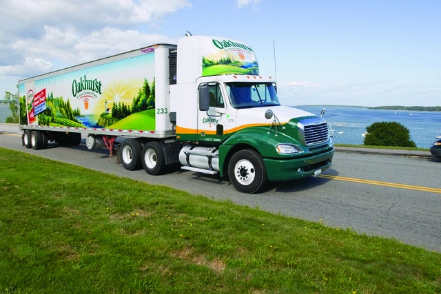
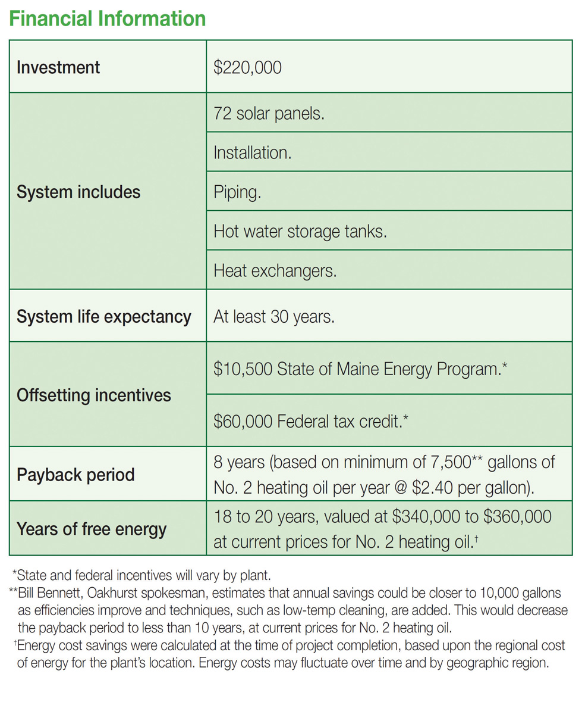
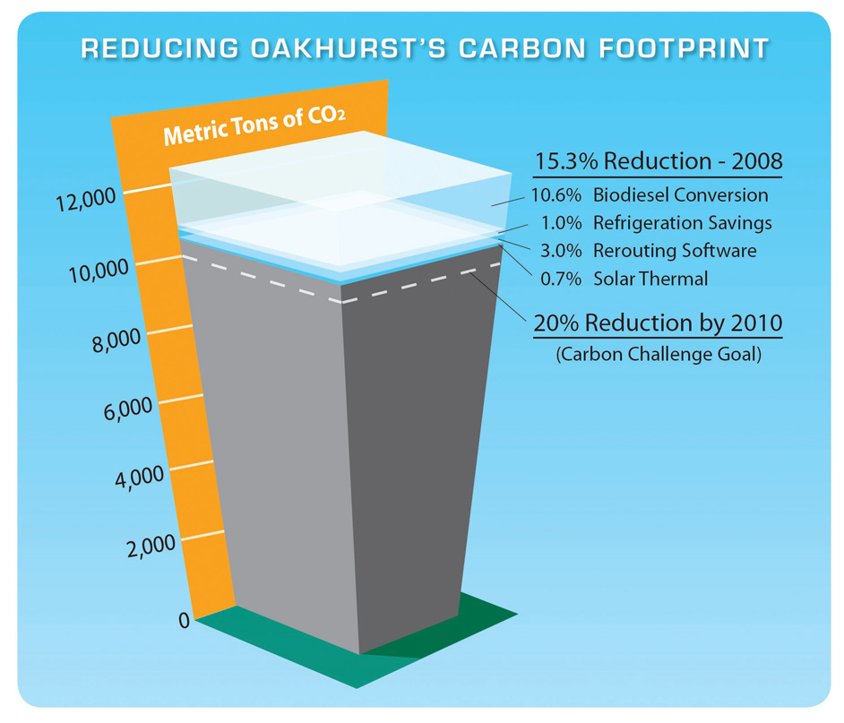

Keep it “CLEAN,” Keep it “COLD,” Keep it “MOVING.”“Home Page,” Oakhurst Dairy, http://www.oakhurstdairy.com.
The Oakhurst motto
Stanley T. Bennett purchased a dairy from the Leadbetter family in Portland, Maine, in 1921.J. Hemmerdinger, “Maine in a Bottle: Oakhurst Dairy Homogenizes Its Marketing Message,” Portland (ME) Press Herald, January 9, 2011, accessed January 20, 2011, http://www.pressherald.com/business/maine-in-a-bottle_2011-01-09.html. The grove, or hurst, of oak trees near the original dairy gave Stanley the idea for the name, Oakhurst Dairy. Sixty years later, about twenty-five dairies were operating in Portland. Today, only a few dairies remain in Portland and in New England, and the few that remain are the survivors of consolidation that has swept the dairy industry nationwide. The Bennetts have differentiated their company by making caring for the environment a core value and defining component of the Oakhurst brand. With a strategy of Maine-centric branding, operating efficiencies, and a deep commitment to the environment the company has carved out a market niche that has helped the small dairy processor survive against dairy processors and retailers many times larger.
As a member of the US Dairy Industry’s Sustainability Council, Bill Bennett was a contributor to two of the industry’s Innovation Center reports: (1) US Dairy Sustainability Initiative: A Roadmap to Reduce Greenhouse Gas Emissions and Increase Business Value (December 2008) and (2) The Sustainability Commitment Report (December 2010). Bennett joined the Dairy Industry’s Sustainability Council as part that organization’s efforts to map, study, and recommend programs for greenhouse gas (GHG) reduction in the industry. Oakhurst Dairy was featured in two case studies illustrating carbon reduction best practices by the Innovation Center’s reports: (1) Case Study—Solar Thermal Systems: Dairy Processor Carbon Reduction through Energy Efficiency (D-CREE) and (2) Oakhurst: Sustainability in Practice.
Figure 10.8 Oakhurst Timeline
Oakhurst sells a full line of dairy products to customers in northern New England and eastern Massachusetts. Approximately 90 percent of Oakhurst’s sales come from milk. Customers include large chains, such as Walmart and Market Basket, and small- to medium-sized independent grocery and convenience stores, foodservice outlets, schools, restaurants, and independent distributors. In addition to milk, Oakhurst sells branded cream, sour cream, cottage cheese, butter, ice cream, Portland mixes, juices, drinks, and water.
Oakhurst spends more than $2 million annually on its advertising and promotion, featuring in its branding strategy “the natural goodness of Maine.”Elaine Pofeldt, “Oakhurst Dairy,” Center for Small Business and the Environment, http://www.aboutcsbe.org/docs/oakhurstdairy.pdf. According to dairy farmer Eddie Benson, “Oakhurst has helped to build a market for Maine milk.” He noted, “They have done a really good job of promoting Maine-grown products and marketing milk to people in Maine.”J. Hemmerdinger, “Maine in a Bottle: Oakhurst Dairy Homogenizes Its Marketing Message,” Portland (ME) Press Herald, January 9, 2011, accessed January 20, 2011, http://www.pressherald.com/business/maine-in-a-bottle_2011-01-09.html. According to Julie-Marie Bickford, executive director of the Maine Dairy Industry Association, “Oakhurst in its markets emphasizes the local factor, more than the larger dairies. They use the Maine cachet, linking to the idea that milk comes from local farms.”J. Hemmerdinger, “Maine in a Bottle: Oakhurst Dairy Homogenizes Its Marketing Message,” Portland (ME) Press Herald, January 9, 2011, accessed January 20, 2011, http://www.pressherald.com/business/maine-in-a-bottle_2011-01-09.html.
Cheryl Beyeler, executive director of the Maine Dairy and Nutrition Council, when asked about Stanley’s knowledge of the Maine consumers, “Maine consumers don’t always follow national trends, and I think Stan was acutely aware of that.”John Richardson, “Oakhurst CEO Stanley Bennett Dies,” Portland (ME) Press Herald, February 25, 2011, accessed March 5, 2011, http://www.pressherald.com/news/oakhurst-ceo-stanley-bennett-dies_2011-02-25.html.
Oakhurst’s sole manufacturing facility and primary warehouse are located at its headquarters in Portland. It owns three additional distribution facilities in Maine, one in New Hampshire, and one in Massachusetts. Every day approximately ten 7,500-gallon tanker trucks deliver raw milk to Oakhurst’s 65,000-square-foot processing plant in Portland, Maine. And every day between 130,000 and 150,000 gallons of milk are processed. The milk comes from eighty farms throughout Maine and northern New England. Many of these farms are family owned and operated and sell their milk exclusively to Oakhurst.J. Hemmerdinger, “Maine in a Bottle: Oakhurst Dairy Homogenizes Its Marketing Message,” Portland (ME) Press Herald, January 9, 2011, accessed January 20, 2011, http://www.pressherald.com/business/maine-in-a-bottle_2011-01-09.html. Oakhurst has been buying its milk from some of these farms for more than seventy-five years.
In 2010, Oakhurst processed approximately twenty-two million gallons of fluid milk per year in addition to other dairy products and beverages.Elaine Pofeldt, “Oakhurst Dairy,” Center for Small Business and the Environment, http://www.aboutcsbe.org/docs/oakhurstdairy.pdf. At twenty-two million gallons of fluid milk per year, Oakhurst emits approximately a little under sixty-six million pounds, or thirty thousand metric tons, of carbon dioxide equivalent (CO2e) annually. A metric ton is equivalent to 1,000 kilograms or about 2,200 pounds. Oakhurst used an estimated 27,500 million BTUs in milk production, packaging, and transporting.
Oakhurst samples the milk from each farm, each tanker is tested for antibiotics, and upon completion of the testing, the milk is off-loaded into raw milk storage silos. From the silos, the milk is piped to the processing area where it is separated to the proper level of butterfat. Fluid milk products are then homogenized, pasteurized, and fortified with vitamins. The product is piped into pasteurized tanks from which it is sent to filling machines in the packaging area. Cultured products like buttermilk or sour cream are standardized to the proper fat level and then sent to a cultured tank, where they are held until the culturing process is complete. After completion of the culturing process, the product is sent to another filler in the packaging area.
Eight packaging machines controlled by a computer system direct the products through a network of valves and stainless steel pipes so that each product gets to the proper filler at the right time. Each packaging machine fills a different size or style package. Quality testing is conducted every step of the way through the processing and packaging areas. Oakhurst was one of the first dairy processors to voluntarily adopt the most modern and rigorous set of federal quality standards known as HACCP (Hazardous Analysis Critical Control Points) and is one of only twelve dairies in the country currently implementing these exacting quality standards. After filling, each product is cased and moved to refrigerated warehouses where it is put away for storage until shipped to customers. In warehouse locations and on trucks, the temperature is constantly monitored to ensure the product’s quality.“Home Page,” Oakhurst Dairy, http://www.oakhurstdairy.com; J. Hemmerdinger, “Maine in a Bottle: Oakhurst Dairy Homogenizes Its Marketing Message,” Portland (ME) Press Herald, January 9, 2011, accessed January 20, 2011, http://www.pressherald.com/business/maine-in-a-bottle_2011-01-09.html. According to Bill Bennett, “The whole process, from cow to supermarket can be as short as 3 days.”
Stan and Bill Bennett’s quest for improving their company’s carbon footprint and the quality of life in the communities in which it operates have guided the company’sJ. Hemmerdinger, “Maine in a Bottle: Oakhurst Dairy Homogenizes Its Marketing Message,” Portland (ME) Press Herald, January 9, 2011, accessed January 20, 2011, http://www.pressherald.com/business/maine-in-a-bottle_2011-01-09.html. decisions for nearly three decades. Oakhurst has focused on significantly reducing its carbon footprint primarily by lowering its use of fossil fuels and improving its operations by implementing lean manufacturing principles. Oakhurst’s GHG emission factors include the use of electricity, natural gas, diesel fuel, heating oil, and refrigerant in the transporting, processing, packaging, and distributing of its milk to customers.
When Governor John Baldacci of Maine put into place a first-in-the-nation Governor’s Carbon Challenge (GCC), a voluntary carbon dioxide emission reduction program, in 2004, Oakhurst was one of the first companies to sign on to the program. The goal of the GCC program was to encourage organizations to develop strategies to reduce direct emissions from on-site fuel combustion and company-owned vehicles as well as from indirect sources, such as purchased electricity.Clean Air–Cool Planet, Taking All the Right Steps: A Maine Dairy Reduces Its Carbon Footprint, http://www.cleanair-coolplanet.org/information/pdf/Oakhurst%20Dairy%20Case%20Study%2001272009.pdf.
Oakhurst set a goal of a 20 percent reduction in carbon emissions by 2010 (15 percent direct GHG emissions and 5 percent indirect) using Oakhurst’s 1998 carbon footprint as the baseline. With the help and encouragement of a nonprofit, Clean Air–Cool Planet (CA–CP), an inventory of Oakhurst energy consumption by operations was completed. It was determined that the company’s 1998 carbon footprint was 12,594 metric tons of CO2e. Oakhurst’s carbon footprint began with raw product entering the processing plant and ended with the delivery of packaged milk to the store via truck.Clean Air–Cool Planet, Taking All the Right Steps: A Maine Dairy Reduces Its Carbon Footprint, http://www.cleanair-coolplanet.org/information/pdf/Oakhurst%20Dairy%20Case%20Study%2001272009.pdf.
In 2005, Oakhurst brought online a new, state-of-the-art, $10 million plant at its headquarters in Portland.“Home Page,” Oakhurst Dairy, http://www.oakhurstdairy.com. Working with an energy consultant and CA–CP, the facility integrated a number of energy efficient technologies, systems, and procedures. These included installing insulated cold tanks and a hot water recovery system. The hot water recovery system lowered cost and significantly reduced water use. The processing of milk uses large quantities of hot water for pasteurization and for cleaning cases and equipment. The hot water recovery system saved 2,500 gallons of heating oil per year and reduced carbon emissions by twenty-five metric tons (There are 22.384 pounds of CO2e per gallon of diesel fuel).Clean Air–Cool Planet, Taking All the Right Steps: A Maine Dairy Reduces Its Carbon Footprint, http://www.cleanair-coolplanet.org/information/pdf/Oakhurst%20Dairy%20Case%20Study%2001272009.pdf. National Geographic estimated that fifty-three gallons of water are used from the farm to the table for every glass of milk consumed.“Hidden Water,” National Geographic, April 2010, http://ngm.nationalgeographic.com/2010/04/last-drop/royte-text.
Also in 2005, Oakhurst, working with CA–CP, calculated that by switching their truck fleet from diesel to B20 (a 20 percent soy and 80 percent petroleum blend), it could lower carbon emissions. As a result of this estimate, management converted more than one hundred trucks and tractors to biodiesel fuel without any modifications. By 2006, Oakhurst Dairy operated the largest private fleet of its kind in New England to run on soy-based biodiesel. The switch reduced Oakhurst carbon emissions by 1,332 tons.Clean Air–Cool Planet, Taking All the Right Steps: A Maine Dairy Reduces Its Carbon Footprint, http://www.cleanair-coolplanet.org/information/pdf/Oakhurst%20Dairy%20Case%20Study%2001272009.pdf. Bill Bennett noted, “Maine bio-fuels take the oil from the restaurants, converts it to biofuelA fuel source generated from a renewable, biological source, such as corn, soybeans, or algae., then we put it in the trucks that are delivering (milk products) to those same restaurants.”“Stanley T. Bennett II, Oakhurst Dairy President, Dedicated to Community,” Forecaster (Falmouth, ME), March 1, 2011, http://www.theforecaster.net/content/pn-obitbennett-030211.
In an additional effort in 2005 to lower its carbon emissions, Oakhurst invested in “rerouting” software for its delivery trucks. With the new software the company was able to reduce the number of its delivery routes from ninety-two to sixty-seven. By doing this, Oakhurst saved 88,000 gallons of diesel fuel and lowered its carbon emissions another 894 metric tons.Clean Air–Cool Planet, Taking All the Right Steps: A Maine Dairy Reduces Its Carbon Footprint, http://www.cleanair-coolplanet.org/information/pdf/Oakhurst%20Dairy%20Case%20Study%2001272009.pdf.
Estimated typical costs and savings for a single-site CVRS project implemented to reduce transport costs by improving efficiency. Note that clearly, as each project is different, the costs and savings shown are only indicative, although they are representative of those experienced in practice.
Table 10.1 Example CVRS Project Costs and Savings
| Organization details | |
| Current annual transport spend | £1,500,000 |
| Fleet size | 25 vehicles |
| Depreciation period for CVRS project | 3 years |
| Project costs setup | |
| Hardware (PCs, printers, interface) | £3,000 |
| Software | £30,000 |
| Implementation | |
| Training | £2,000 |
| Data verification and cleansing (3 man weeks @ £1,500) | £4,500 |
| Project management (10 days @ £500) | £5,000 |
| Total project costs | £44,500 (A) |
| Annual costs | |
| Depreciation (1st, 2nd and 3rd years) | £11,000 (B) |
| System updates and maintenance (2nd and 3rd years) | £3,000 (C) |
| Retraining (2nd and 3rd years) | £2,000 (D) |
| Total year 1 costs (implementation plus depreciation) | £55,500 (A+B) = G |
| Total year 2 and 3 costs (recurring costs only) | £16,000 (B+C+D) = H |
| Cost saving year 1 (8% of transport spend, equivalent to two vehicles) @ 50% (assuming six months to implement project, followed by six months in operation) | £60,000 (E) |
| Annual cost savings year 2 onwards (8% of transport spend, equivalent to two vehicles) | £120,000 (F) |
| Net financial benefit in year 1* | £4,500 (E–G) ($7088.85, where 1 British pound sterling is equal to 1.5753 US dollars on January 31, 2012) |
| Net financial benefit in year 2 | £104,000 (F–H) ($163,831.20) |
| Net financial benefit in year 3 | £104,000 (F–H) |
| Payback period | Less than year 2 |
| *Note: This example assumes a relatively modest cost saving of 8% (10–12% savings are common) and ignores the effect of increasing transport unit costs, such as the cost of fuel. | |
|---|---|
Source: “Freight Best Practice,” Llywodraeth Cymru (Welsh Government), accessed January 31, 2012, http://www.freightbestpractice.org.uk.
In the spring of 2008, Oakhurst, with the help of CA–CP and Ascendant Energy, installed seventy-two solar hot water panels, approximately 2,500 square feet, on the roof of its Portland facility, making it one of the largest installations of its kind in the northeast. By preheating water, the hot water panels reduced heating oil use at the facility by more than five thousand gallons per year, lowering carbon emissions by fifty-one metric tons.Clean Air–Cool Planet, Taking All the Right Steps: A Maine Dairy Reduces Its Carbon Footprint, http://www.cleanair-coolplanet.org/information/pdf/Oakhurst%20Dairy%20Case%20Study%2001272009.pdf. The payback periodThe length of time required to recover the cost of an investment. for the $220,000 investment in the Portland facility was estimated at eight years using 2008 fuel costs of $2.40 per gallon.Innovation Center for US Dairy, Case Study—Solar Thermal Systems: Dairy Processor Carbon Reduction through Energy Efficiency (D-CREE): New England Dairy Taps Solar Energy and Hot Water Recovery to Reduce Energy Costs and Carbon Footprint, accessed January 9, 2011, http://www.usdairy.com/Sustainability/OurCommitment/Documents/CaseStudy-SolarThermalSystems.pdf.
In 2009, Oakhurst installed a solar photovoltaic (PV) energy system on the roof of its Waterville facility. The 216 solar PV panels generated approximately forty-five thousand kilowatt hours (kWh) of electricity annually, or approximately 15 percent of the building’s electricity use. The installation saved another five thousand gallons of fuel oil annually, or fifty-one metric tons. Other benefits accruing to the installations were the extension of the life of the company’s boilers.Clean Air–Cool Planet, Taking All the Right Steps: A Maine Dairy Reduces Its Carbon Footprint, http://www.cleanair-coolplanet.org/information/pdf/Oakhurst%20Dairy%20Case%20Study%2001272009.pdf.
In 2009, Oakhurst purchased a hybrid delivery truck, the first of its kind in use in the dairy industry. Oakhurst estimated saving nine gallons of fuel per day with the hybrid truck and lowering CO2 emissions by fifty-two thousand pounds annually.“Home Page,” Oakhurst Dairy, http://www.oakhurstdairy.com.
In 2009, Oakhurst started installing aerodynamic side skirts to twenty-five of its large semitrailer delivery trucks. The skirts lowered annual diesel fuel cost by 6 percent to 8 percent. Each semitrailer truck traveled an average of thirty thousand miles per year. When completely equipped, the twenty-five-truck fleet would produce approximately 7.6 million fewer pounds of CO2e annually, or 154 metric tons.“Home Page,” Oakhurst Dairy, http://www.oakhurstdairy.com.
Figure 10.10 Oakhurst Delivery Truck
Source: Oakhurst Dairy, http://www.oakhurstdairy.com/about/history.php.
Other cost-saving, waste-reduction, and carbon-lowering steps adopted by Oakhurst in the management of its truck fleet included recycling of oil filters, antifreeze, and waste oil; installing equipment in refrigeration units to improve efficiency; purchasing retreads, which often record better gas mileage and require less oil to manufacture; installing idle regulators to reduce emissions; and installing truck speed governors.“Home Page,” Oakhurst Dairy, http://www.oakhurstdairy.com.
Figure 10.11 Dairy Industry Carbon Reduction Efforts
Source: Innovation Center for US Dairy, Case Study—Solar Thermal Systems: Dairy Processor Carbon Reduction through Energy Efficiency (D-CREE): New England Dairy Taps Solar Energy and Hot Water Recovery to Reduce Energy Costs and Carbon Footprint, http://www.usdairy.com/Sustainability/OurCommitment/Documents/CaseStudy-SolarThermalSystems.pdf.
Oakhurst’s carbon and waste reduction actions were not isolated events or one-time investments. The company’s culture fosters continuous learning and improvement. For example, Oakhurst had followed traditional industry practice of leaving truck refrigeration units running at the end of the day to keep product inventory from spoiling. Under new operational guidelines, Oakhurst now removes product from refrigeration trucks at the end of the day, and the refrigeration units are shut down, reducing annual CO2 emissions by 120 metric tons.Clean Air–Cool Planet, Taking All the Right Steps: A Maine Dairy Reduces Its Carbon Footprint, http://www.cleanair-coolplanet.org/information/pdf/Oakhurst%20Dairy%20Case%20Study%2001272009.pdf.
In October 2007, CA–CP awarded Oakhurst its Climate Champion Award for corporate action on global warming. The company was selected for demonstrating an enterprise-wide commitment to reducing heat-trapping gases, for willing to be transparent in its efforts, and for helping support effective policy in the region. Also that month, Oakhurst became the first recipient of the Environmental Hero Award presented by Heart of New Hampshire Magazine.Clean Air–Cool Planet, Taking All the Right Steps: A Maine Dairy Reduces Its Carbon Footprint, http://www.cleanair-coolplanet.org/information/pdf/Oakhurst%20Dairy%20Case%20Study%2001272009.pdf. In September 2007, as part of an effort to begin tracking GHG emissions in a select portion of its supply chain, Walmart singled out Oakhurst Dairy as one of a small percentage of the retailer’s sixty thousand suppliers that were taking steps to reduce their carbon footprint.Elaine Pofeldt, “Oakhurst Dairy,” Center for Small Business and the Environment, http://www.aboutcsbe.org/docs/oakhurstdairy.pdf.
In 2008, CA–CP, Oakhurst’s nonprofit environmental partner (see http://www.cleanair-coolplanet.org), published a case study on Oakhurst’s environmental initiatives. CA–CP reported in the case study that by implementing a variety of initiatives since 2002, Oakhurst was able to reduce its CO2e emissions by 1,630 metric tons annually, which is equivalent to taking 262 cars off the road for a year.Clean Air–Cool Planet, Taking All the Right Steps: A Maine Dairy Reduces Its Carbon Footprint, http://www.cleanair-coolplanet.org/information/pdf/Oakhurst%20Dairy%20Case%20Study%2001272009.pdf. Also in 2008, Oakhurst was recognized by Maine’s Department of Environmental Protection and the governor’s administration for meeting part of its GCC goal ahead of schedule (see Figure 10.12 "Reducing Oakhurst’s Carbon Footprint 2008"). Governor Baldacci stated at the time, “Whether it’s solar, wind, tidal or innovative wood products, we must be aggressive in our pursuit of energy alternatives. Oakhurst is showing great leadership with its solar project, which further underscores the company’s commitment to a cleaner planet and a stronger Maine.”Clean Air–Cool Planet, Taking All the Right Steps: A Maine Dairy Reduces Its Carbon Footprint, http://www.cleanair-coolplanet.org/information/pdf/Oakhurst%20Dairy%20Case%20Study%2001272009.pdf.
Figure 10.12 Reducing Oakhurst’s Carbon Footprint 2008
Source: Clean Air–Cool Planet, Taking All the Right Steps: A Maine Dairy Reduces Its Carbon Footprint, http://www.cleanair-coolplanet.org/information/pdf/Oakhurst%20Dairy%20Case%20Study%2001272009.pdf.
By the end of 2010, Oakhurst had met the GCC. Also in 2010, Oakhurst’s Sustainability Committee set new carbon reduction and other resource conservation and efficiency goals for energy, water, solid waste, and transportation. The carbon reduction goals set for 2014 using 2008 as the baseline year are as follows:
Oakhurst’s senior management team strives to build an organizational culture that supports its sustainability strategies and practices in the long term. In addition to partnering with CA–CP, Oakhurst hired a sustainability consultant to work with the senior managers to examine Oakhurst’s social and environmental practices and to design organization change tactics to improve those practices. The consultant worked with the Bennett family to help transform and inspire employees to adopt and integrate sustainability practices into Oakhurst’s operational culture. As part of this effort, internal teams were established to help bring sustainability to the forefront of Oakhurst Dairy’s culture. These teams helped to establish and manage sustainability efforts including calculating carbon footprint, setting and tracking reductions, reporting to the Carbon Disclosure Project and Maine’s governor’s challenge. As part of the continuing training program, Oakhurst hired another consultant to help them draft a code of ethics and respect in the workplace.